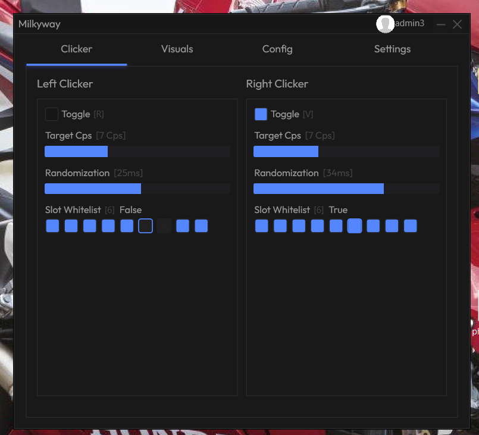
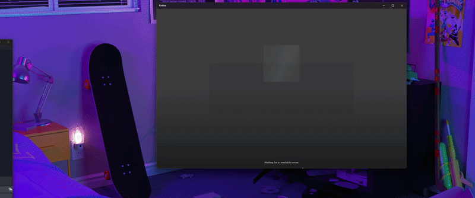
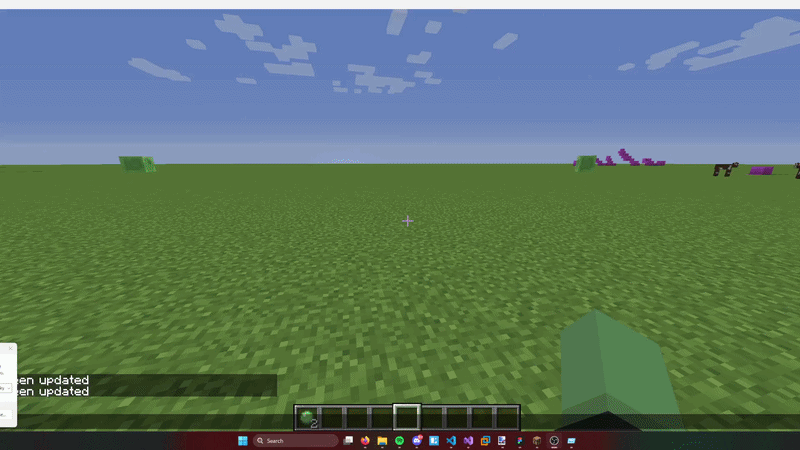

About
Hallo, ik ben Tim.
Ik ben een mbo-student met een grote interesse in software development.
Op school leer ik momenteel HTML en CSS. Zelf ben ik al 6 bezig met programmeren, vooral met front-end development.
Ik werk graag met C#, XAML en WPF om mijn eigen applicaties en interfaces te maken.
Ik vind het leuk om nieuwe dingen te leren en mijn ideeën om te zetten in werkende projecten.
Bekijk mijn eerdere projecten.

Mijn Projecten
Ik heb aan meerdere projecten gewerkt, zoals Milkyway executor, autoclicker.

Milkyway Executor
Milkyway is een lua script executor voor roblox dat ik heb gemaakt toen ik 13 jaar oud was.
In XAML & C#
Datum: 2023-06-10

Milkyway Autoclicker
Milkyway Autoclicker is een autoclicker voor Minecraft Java. Ik heb dit project samen met een paar vrienden gemaakt in XAML en C#. Zelf heb ik vooral aan de frontend gewerkt.
Datum: 2025-08-05